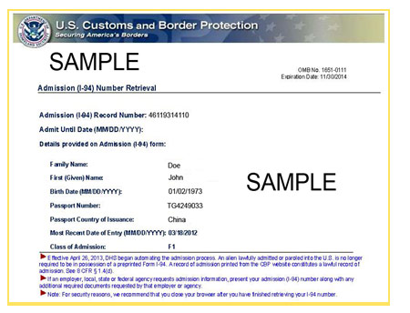

Planning for Your U.S. Arrival
Coming to CWRU
You are required to arrive on campus by the start date printed on your I-20 or DS-2019 form, which is also the first day of class.
Many programs at CWRU offer orientation programs at which new students are either strongly recommended or required to attend. These programs are typically held one to two weeks prior to the indicated start date on your immigration form.
Given that new F-1 or J-1 international students are permitted to enter the U.S. 30 days prior to the start date indicated on their I-20 or DS-2019, attending an orientation program should not be a problem. In fact, arriving a bit early to campus is a good idea, as it will allow you to get adjusted to the time change and settle into your new surroundings.
Visa/Immigration Procedures
Once you receive your I-20 or DS-2019, learn about the student visa application process and obtaining a visa.
Port of Entry Requirements
Effective April 30, 2013, the I-94 paper record became electronically generated at the border. The paper I-94 card will no longer be issued for most people traveling by air or sea as the U.S. Customs and Border Protection (CBP) now gathers travelers’ arrival/departure information automatically from their electronic travel records.
Your immigration details, such as your admission status (e.g. F-1, J-1), date of entry and status end date will be stamped directly into your passport. Your arrival/departure information will all be recorded electronically by CBP and accessible to you online.
It is a good practice to access your I-94 Admission Record online after entering the U.S. to check that all of your personal information is correct. You also should print a copy to keep with your immigration documents as proof of your current status in the U.S.
Be prepared to present this printed copy of your I-94 when applying for a Social Security Number or driver's license and when completing an I-9 Form for employment. There may be other instances in addition to those just mentioned when you'll be asked to present this printed information.
Paper I-94 cards will still be distributed at land borders with Canada and Mexico. International Student Services encourages you to ask for an I-94 when you are enter the U.S. from Canada or Mexico if you don’t automatically receive one. If you entered the country more than two years ago, your I-94 record will not appear in the online system at this time; your current I-94 card will remain valid.
For help and for more information on the I-94, download the I-94 Fact Sheet or ask an International Student Services advisor for help.
Below is a sample of the I-94 printout from the site after you enter your information:

If you cannot access your I-94 information and have been in the United States at least 10 days, please contact the U.S. Customs and Border Protection office in Cleveland at 216.267.3600 and select option 2. They will attempt to fix your situation over the phone or will make an appointment if necessary.
Required Documents
When arriving at the port of entry, go to the terminal area for arriving passengers to begin inspection and be prepared to present the following documentation to the CBP officer:
- Valid passport (must be valid for at least six months into the future at all times), including attached envelope of immigration documents provided by Embassy or Consulate, with F-1 or J-1 entry visa stamp
- SEVIS Form I-20 or DS-2019, issued by CWRU
- Receipt Notice or Internet Receipt verifying SEVIS fee payment
- Evidence of financial resources
- Name and contact information for Designated School Official (DSO) or Responsible Office (RO) at your intended school or program
Like all entering visitors, you will be asked to explain the reason you wish to enter the United States and to provide information about your final destination. It is important that you explain to the CBP officer that you will be a student at Case Western Reserve University. Also, be prepared to include the address of the university.
When your inspection is complete, the officer will:
- Stamp your passport with your immigration details. The likely notation will include information about your status (either F-1 or J-1), the date, and D/S, which means Duration of Status.
- Return the I-20 or DS-2019 and passport to you.
For more information on entering the United States, please visit the Customs and Border Protection website.
Funding
Even if you have substantial funding from CWRU, you should bring with you approximately $2,000 (USD) to cover immediate expenses for initial supplies and books, settling-in costs such as security deposits for rent, telephone, and utilities. We recommend you bring these funds in a combination of cash (a combination of $1, $5, and $20 bills totaling about $300-600) and the balance in "traveler's checks" in U.S. dollars. Traveler's checks provide a safe way to carry money while traveling in the United States and abroad. They are insured against loss and theft and are more readily accepted in the United States by businesses away from your area of residence than personal checks. Banks sell traveler's checks, for which they charge a small fee of usually 1% for the value of checks purchased.
Establish a bank account as soon as possible after your arrival in the United States. It is not wise to carry or keep large amounts of cash. For more information about banking options, visit the Banking and Legal Services page
Getting to CWRU
As part of the packet containing your I-20 or DS-2019, ISS will include welcome information from various international student groups on campus. Many of these groups volunteer to meet new students at Cleveland Hopkins International Airport when they arrive. We strongly encourage you to make arrangements with a student group to meet you at the airport well in advance of your planned arrival.
Undergraduate international students will receive information on their New Student Checklist advising them of airport shuttle options and how to register for that service.
The Office of International Student Services does not coordinate airport pick up. If you do not make arrangements in advance to be picked up at the airport, you can arrive at the university using Cleveland RTA’s Airport Station.
If you arrive outside of the RTA’s regular operating hours, you may wish to get a taxi or ask the airport information desk to help you arrange accommodations at a local hotel or motel until the morning.
Living on Campus
To learn more about housing options on or near campus, visit our housing section.